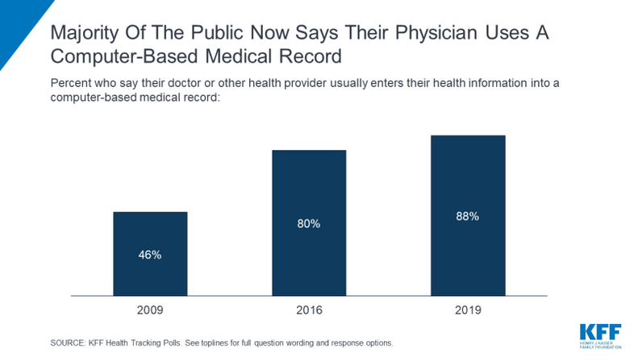

Electronic medical records, and their impact on efficiency and privacy.
The digital revolution over the recent decade has introduced major changes to the healthcare industry, especially the introduction of Electronic Medical Health Records (EMRs). The traditional system of paper-based data such as paper charts of patient data has been replaced with digitized versions allowing efficient storage, more accessibility, and easier management of patient information. Electronic medical health records (EMRs) have become a very crucial and vital part of the modern-day healthcare system. They provide support for various areas of the medical field by improving efficiency and patient privacy. EMRs were first introduced in the 1960s and 1970s when they first began their development. “The first EMR was developed in 1972 by the Regenstreif Institute in the United States and was then welcomed as a major advancement in medical practice” (Honavar, n.d.) However, at that time they were not widely implemented and welcomed in medical care due to the expensive cost. “The vital push came through the American Recovery and Reinvestment Act 2009, spearheaded by Barack Obama, which envisaged incentives to EMR users” (Honavar, n.d.). EMRs were not widely used until 2009 when Barack Obama introduced an act to start the implementation of EMRs across the healthcare system. Since 2009 EMRs have been continuously developed and are seen all across the healthcare system. This website explores the opportunities, choices, and risks that EMRs introduce and delves deep into each topic.
